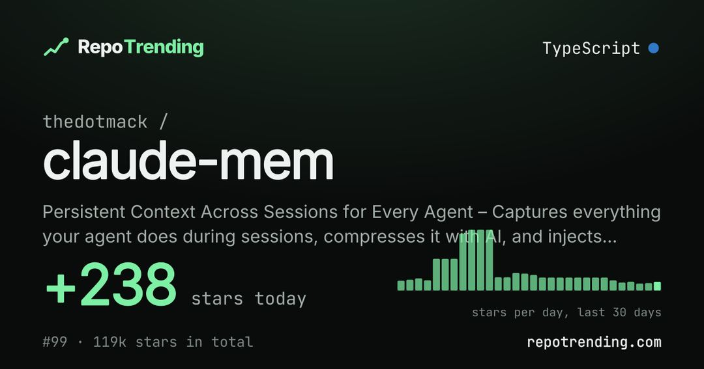
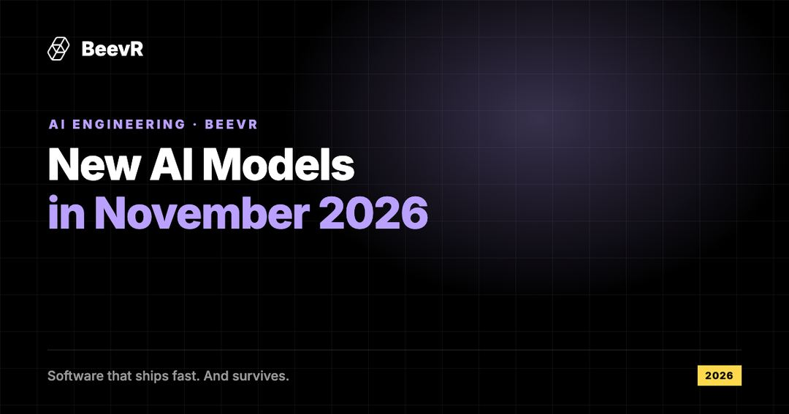
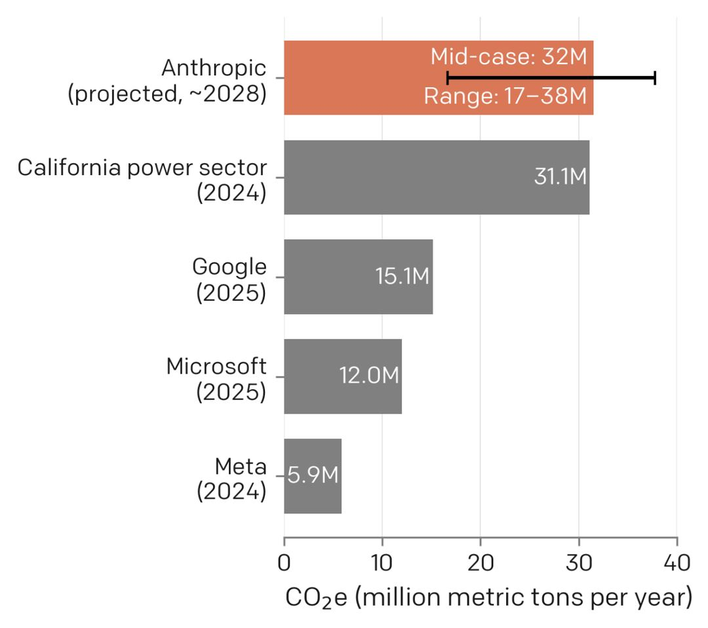
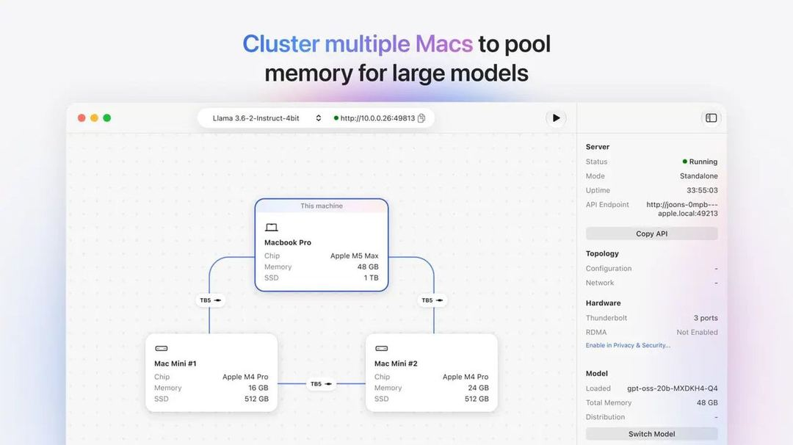
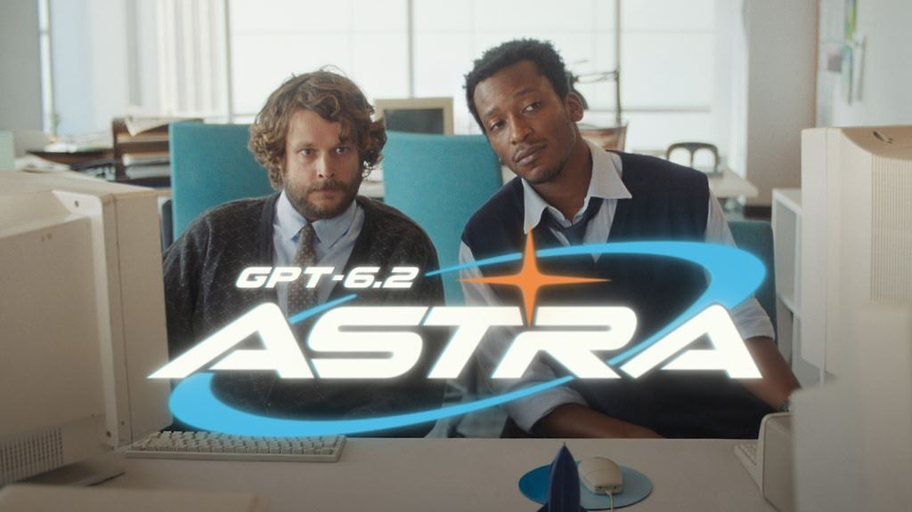
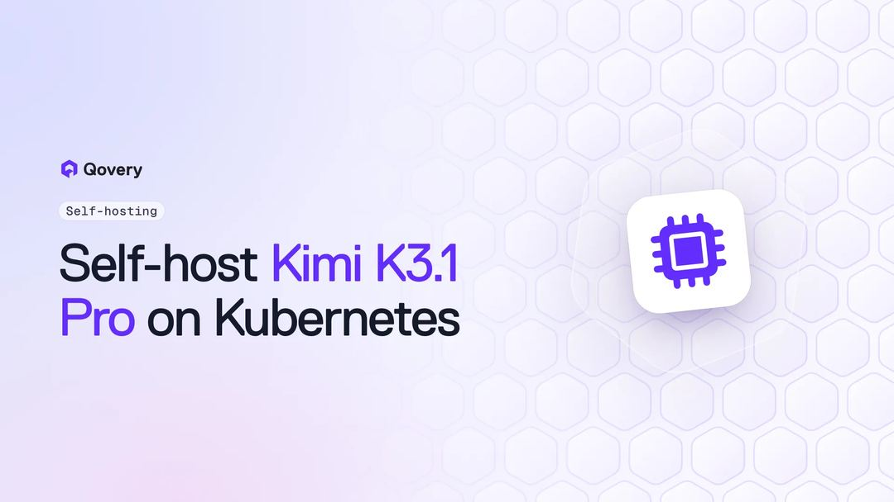
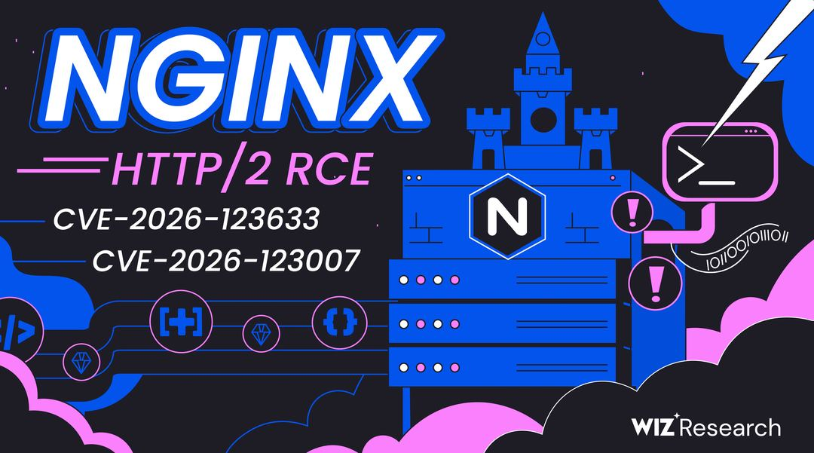
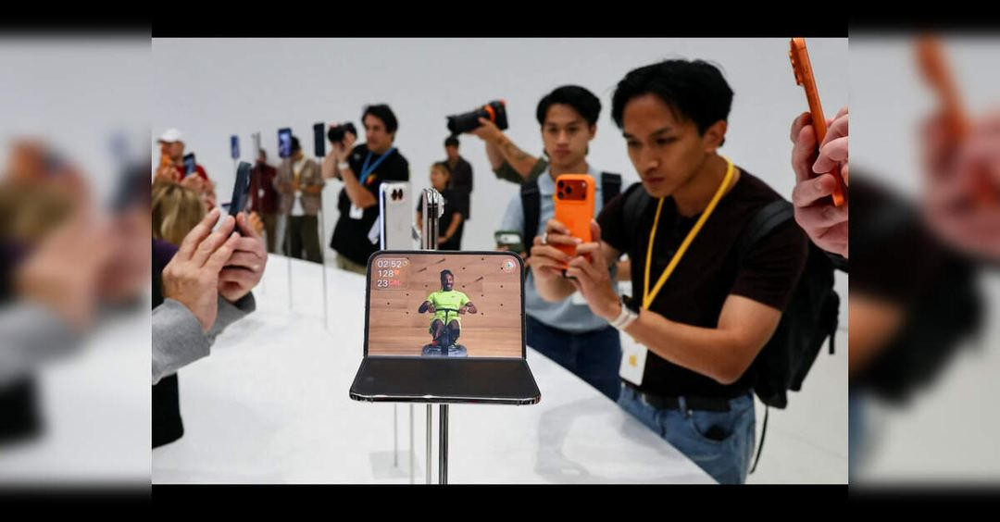
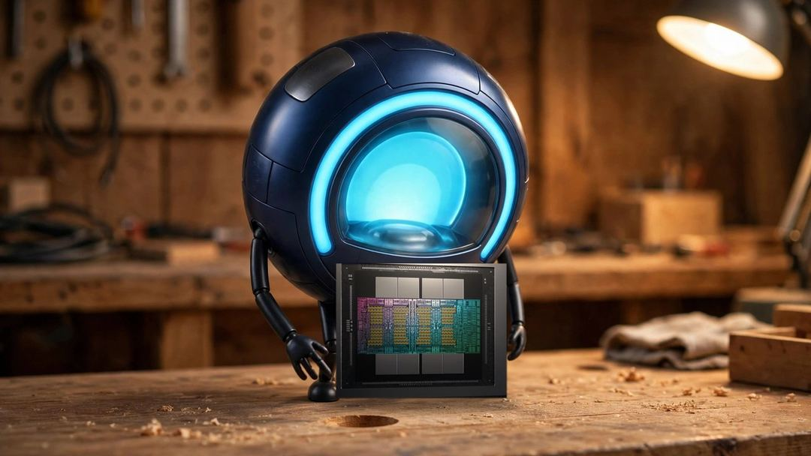
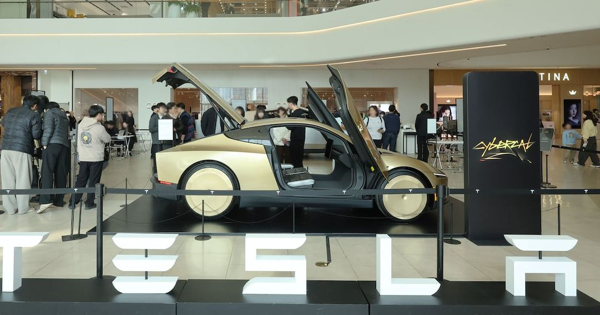

国内热榜 · 精选
全球实时
AI 与 Agent 圈
8 条前沿模型一周连发与 llama.cpp 1.0 落地，Agent 之争转向记忆、成本与电力
11 月中下旬前沿模型密集发布：Claude Fable 5.2、Gemini 4 系列、GPT-6.2 Astra/Sol 与 Qwen4-Max、Kimi K3.1 Pro 几乎同周登场，价格战同步打响。与此同时开源侧 llama.cpp 正式发布 1.0、编码 Agent 的记忆层 claude-mem 星数冲高，而 Anthropic 数据中心 87% 燃气供电的分析在 HN 引爆了关于 AI 碳账的争论。
llama.cpp 发布 v1.0：本地 AI 终于有了稳定 API 契约
11 月 13 日，llama.cpp 与底层 ggml 同步发布 v1.0.0，结束三年半按提交编号发版的历史，承诺公共 C API 的破坏性变更只随大版本出现。此版清理了 35 个已弃用函数，新增 FP8 KV 缓存、主机内存 MoE 专家缓存，并支持 Kimi-K3.1-Pro 等新架构，总支持架构超过 150 种。Ollama、LM Studio 等大量本地工具都建在它之上，社区普遍视其为本地推理走向成熟的标志。

claude-mem 冲至约 11.9 万 Star：编码 Agent 开始拼记忆层
thedotmack/claude-mem 为 Claude Code、Codex、OpenCode、Gemini 等编码 Agent 提供跨会话持久记忆：记录 Agent 的操作、经 AI 压缩后再注入后续会话，避免每天重复交代项目背景。11 月 23 日其 Star 达 119,085，过去 30 天新增 16,525；同期 vercel-labs/agent-browser 等 Agent 工具也在 GitHub Trending 上走热，显示 Agent 竞争正从模型本身转向记忆、浏览器操作等外围基础设施。

Claude Fable 5.2 发布：降价 20% 并守住多项榜首
Anthropic 于 11 月 9 日发布 Claude Fable 5.2 与仅供验证机构使用的 Mythos 5.2，定价降至每百万 Token 输入 $8、输出 $40（前代为 $10/$50），上下文 1M。厂商评测称其在 FrontierCode 2.0、FrontierSWE v2 等长程工程与多 Agent 编排任务上领先，被定位为需要数小时自主工作的场景，普通工程则建议先用 Opus 5.5 或 Sonnet 5.5 再升级。
阿里发布 Qwen4-Max：2.4T 参数、1M 上下文，价格压到 $1.50/$4.50
阿里于 11 月 16 日正式发布 Qwen 家族迄今最强的 Qwen4-Max：2.4 万亿总参数 MoE、每 Token 激活 71B，原生视觉与 100 万 Token 上下文，主打编码、Agent 与视觉推理，DeepSWE v1.1 厂商成绩为 75.7。旗舰本身不开放权重、仅经 QwenCloud API 提供，阿里称更小的 Qwen4 开源权重版将随后发布，但未给日期。

Anthropic 电力账被扒：2028 年美国算力约 87% 燃气、11% 燃煤引爆争论
Better Data Center Project 11 月 16 日的逐站分析估算，Anthropic 已签约约 15 GW 算力，按边际电源计其 2028 年在美电力约 87% 来自燃气、11% 来自燃煤，年排放中位估算达 3200 万吨 CO2e；报告还指出其在美无直接可再生能源承诺，却已买下 1.7 GW、价值 $34 亿的燃气发电机承诺。该话题成为当天 HN 评论量最高的争论之一，焦点是 AI 扩张的真实碳成本与厂商的责任叙事是否匹配。

Apple Harbor 曝光：把 Mac 变成可组集群的私有本地 AI 服务器
11 月 10 日曝光的 Harbor 由 Apple 子公司 Claris 开发、私密预览中，可在 Apple Silicon Mac 上下载并运行开源权重模型，数据不出本机；更引人注目的是它能通过 Thunderbolt 5 自动组网、多台 Mac 池化统一内存以跑更大模型，依托 macOS Tahoe 26.2 的 RDMA over Thunderbolt 5。社区欢迎更简单的私有推理体验，但也指出凑齐硬件的成本不低；目前 App Store 页面已被下架，无发布日期。

OpenAI 发布 GPT-6.2 Astra 与 Sol：旗舰降价 20%，与 Fable 5.2 同价
OpenAI 于 11 月 17 日同日推出 GPT-6.2 Astra 与 Sol：Astra 面向复杂专业与科学工作，定价降至每百万 Token 输入 $8、输出 $40，与 Claude Fable 5.2 持平，缓存输入折扣加深至 60%；Sol 维持 $2/$10，主打日常任务与多步 Agent 工作流。两款已在 ChatGPT Work、Codex 与 API 上线，同时因网络安全能力被评为 Critical 级别而收紧了高风险安全类请求的防护。

Moonshot 开放 Kimi K3.1 Pro 权重：2.8T 参数、1.56 TB，本地部署门槛拉满
Moonshot 于 11 月 2 日提前把 Kimi K3.1 Pro 完整权重放上 Hugging Face：2.8 万亿总参数 MoE、每 Token 激活 104B、896 个专家、1M 上下文与原生图像输入，MXFP4 检查点约 1.56 TB，许可证允许商用但对大营收 MaaS 业务另设协议。讨论焦点不在跑分而在现实门槛——单是权重就需一台 8×B300 级节点，vLLM 等工具链当时仍在追赶，普通本地玩家只能围观。
全网科技
8 条日本三大车企罕见联手标准化降本，NGINX 爆 9.2 分严重漏洞成全网焦点
最近几天科技圈的主线是成本与安全双重压力：丰田、日产、本田在 Hacker News 以 1310 分登顶，宣布标准化零部件对抗中国车企；NGINX 被曝潜伏十年的未授权远程代码执行漏洞，约 880 万服务可能暴露。与此同时 NVIDIA 交出首个千亿美元季度却因新加坡销售披露引发出口管制质疑，Apple 首款折叠屏 iPhone Duo 售罄、Tesla Cybercab 开卖，芯片与航天领域也密集发布新品与任务。
丰田、日产、本田联手标准化零部件降本，应对中国车企竞争
日本三大车企宣布将统一钢材质量标准、塑料与树脂规范以及线束颜色编码，首批措施预计明年落地，后续将扩展到更多零部件。JAMA 主席、丰田副董事长佐藤恒治称此举源于强烈的危机感，意在削减消费者不易感知的环节成本，把资源投入新技术，以应对价格更低的中国品牌竞争。

NGINX 爆未授权远程代码执行漏洞，最老一例潜伏自 2015 年
Wiz、Ikotas Labs、Metnir、Rapid7 与 Xint 独立发现 NGINX 两项严重漏洞 CVE-2026-123633 与 CVE-2026-123007，均需开启 HTTP/2，其中一例源于整数下溢、自 NGINX 1.9.5 起存在逾十年，静态文件服务也可被攻破。F5 已于 11 月 18 日发布修复版本 1.30.7 与 1.31.9，无法立即升级者被建议先关闭 HTTP/2。
NVIDIA 首个千亿美元季度：营收 1158 亿美元，却停报新加坡销售引质疑
NVIDIA 于 11 月 17 日公布 FY27 第三季度业绩，营收 1158 亿美元、同比增长 103%，其中数据中心 1076 亿美元，并给出约 1300 亿美元的 Q4 指引。但据 FT 报道，公司已停止单独披露新加坡销售——该口径此前约 1040 亿美元且大涨约 70%，在美国调查先进芯片是否经新加坡转运至中国的背景下，披露口径改为按客户总部归属，透明度争议升温。

Apple 首款折叠屏 iPhone Duo 上市即售罄，门店仅有限现货
Apple 首款折叠手机 iPhone Duo 起售价 1999 美元，配备 5.4 英寸外屏与 7.6 英寸内屏，采用侧边 Touch ID 而非 Face ID。首批在线订单数分钟售罄、部分交付推迟至 1 月，Apple 称周五开售时各门店仅有有限数量供到店购买，中国大陆、法国、日本、韩国等多地仅供已在线下单者自提，铰链产能被认为是供给瓶颈。
Palo Alto Networks 45 亿美元全股票收购 Applied Compute
网络安全巨头 Palo Alto Networks 于 11 月 18 日宣布以 45 亿美元全股票交易收购由前 OpenAI 研究人员创立的 Applied Compute，其平台专注于开放权重模型的后训练与推理，联合创始人兼 CEO Yash Patil 将出任联席首席 AI 官。交易预计在 FY27 第三季度完成、尚待监管批准；公司同日公布季度营收 34.4 亿美元、同比增长 39%，并上调全年指引。

SC26 超算大会三巨头同日亮剑：NVIDIA 5 万核 GPU、AMD Venice、Intel D270
在芝加哥 SC26 上，NVIDIA、AMD 与 Intel 在约 24 小时内接连发布旗舰硬件：NVIDIA Rubin HPC 单 GPU 超 5 万 CUDA 核心、预计 2028 年上市；AMD 第 6 代 EPYC Venice 已于 11 月 10 日出货，最高 256 核、台积电 2nm，后续 Venice-X 将堆至 1152MB L3 缓存；Intel D270 则反其道用 160GB LPDDR5X 替代昂贵 HBM。三款均为 2027–2028 年面向国家实验室与 AI 工厂的产品。

Tesla Cybercab 向个人消费者开卖：29990 美元，另需每月 299 美元订阅
据 WSJ 等报道，Tesla 已于 11 月 13 日起向部分美国消费者开放无方向盘、无踏板的双座 Cybercab 个人预订，售价 29990 美元，但需每月支付 299 美元的全自动驾驶订阅才能运行，下月开始交付。该车今年 2 月已在得州超级工厂量产，目前 robotaxi 仅在美国 8 个城市运营；Tesla 还计划明年停产 Cybertruck 转产 Cybercab，并在柏林工厂投资 30 亿欧元。
SpaceX 为国家侦察局发射 NROL-136，打破范登堡发射台周转纪录
SpaceX 于 11 月 22 日清晨从范登堡太空军基地以 Falcon 9 发射 NROL-136 任务，为美国国家侦察局的低轨 proliferated architecture 星座补充一批情报卫星，具体数量未披露。所用助推器 B1097 为第 14 次飞行，发射后约 7.5 分钟回收于 4 号着陆区；此次发射将该发射台的周转纪录缩短了 23 小时以上。